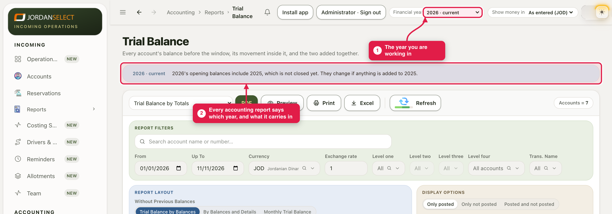
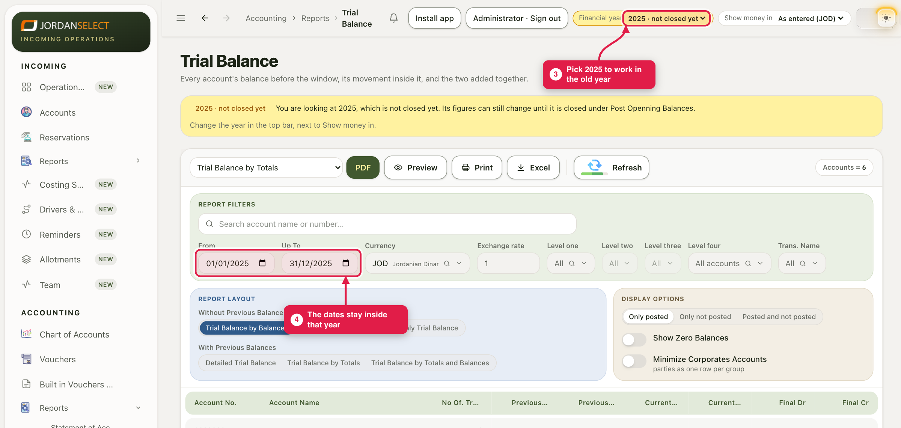

From 1 January you work in the new year, while late bills and invoices still go into the old one. The reports keep both right.
WhoAccountants
WhereThe top bar → Financial year
Takes1 minute
You needNothing
How it works
On 1 January the new year opens by itself. Its opening balances include the old year, even though the old year is not closed yet: the old year’s profit is carried into Profit & Loss (retained), and every other account’s balance carries across. Nothing is posted and nothing is locked.
If a bill dated in the old year arrives later, post it with its real date. The old year’s figures change, and so do the new year’s opening balances, by themselves. When the old year is really finished, close it (guide 10).
1. The year you are working in
1
The Financial year in the top bar shows the year you are working in. It starts on the current year.
2
Every accounting report shows a strip under its title. Blue: the current year, and whether it carries in an older year that is not closed yet.

2026, with 2025 not closed yet carried into its opening balances.
2. Work in the old year
3
To look at the old year, pick it in Financial year. It reads not closed yet, and the strip turns yellow.
4
The report dates move to that year, and the date boxes cannot go outside it. To see several years at once, pick All years.

2025 from 1 January to 31 December. Pick the current year again when you are done.
Opening balances on screenThe usual trial balance layout, Trial Balance by Balances, leaves out the balances before the dates you set. To see the opening balances the old year carries in, pick a layout under With Previous Balances.
3. Check your work
A bill for the old year has a date in the old year, not today’s date.
The trial balance of each year balances (guide 09).
When the old year is final, close it (guide 10). Until then, the strip keeps saying “not closed yet”.
Questions? Ask the finance manager. · Last checked: 11 Nov 2026 · Screens shown are from a test copy of the CRM with made-up data.